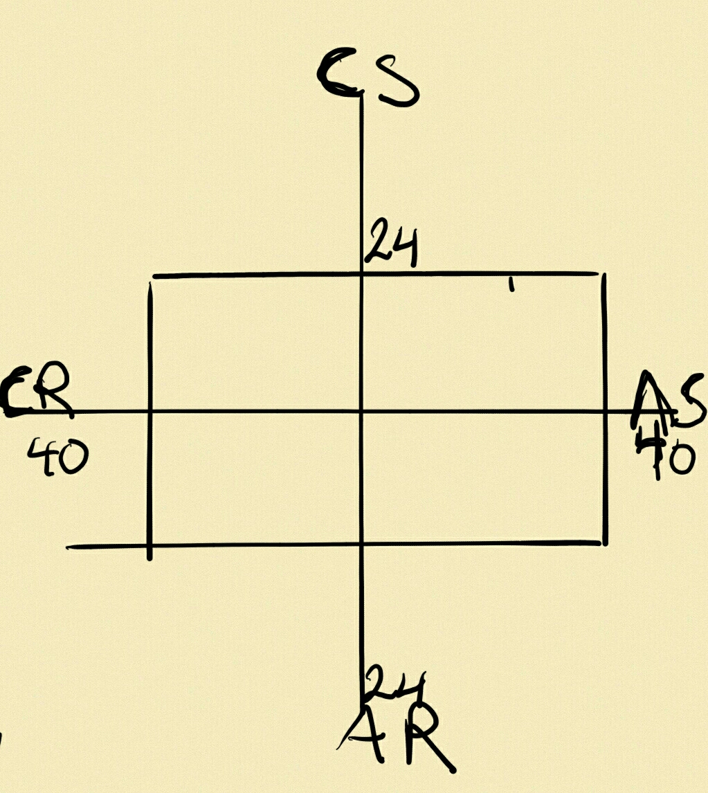

Think ?ing | ~tyle
As you can see from the pic above, my thinking style scores make a perfect rectangle [Concrete Random: 40, Abstract Sequential: 40, Abstract Sequential: 24, Concrete Sequential].
After reading about CR and AS learners, two things have given me cause for concern:
-
CRs and ASs need to be able to work alone. This has been true for me my entire academic life. Most of the times I've had a problem, I've always preferred to go through the problem by myself first. I would remove myself from my friends to a place where I could experiment with different ideas, then return an hour or two later to compare answers.
-
CRs have a hard time with formal reports, routines, and keeping detailed records. You can only imagine how frustrating writing reflections has been for me. I'm the type of person that would rather spend 8 hours trying to solve a logic related problem than 30 minutes writing anything. If I understand/solve something, then I feel the job is done. I would much rather outsource the writing part.
Having said the above, I understand that the challenges DBC is putting me through will only serve to add to my growth in the long run. So, I plan on peer pairing regularly until I make a habit of solving problems with others and on taking the reflections seriously. In the process, I might just improve my writing skills.